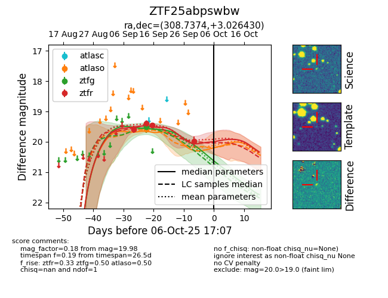
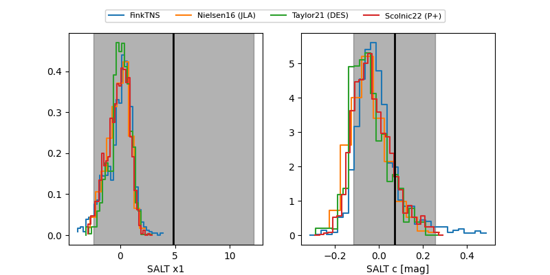

FINK: ZTF25abpswbw
Lasair: ZTF25abpswbw
ALeRCE: ZTF25abpswbw
ZTF25abpswbw (ztf,fink)
equatorial (ra, dec) = (308.7374,+3.02643)
galactic (l, b) = (48.2280,-21.33520)


last atlaso=19.60, ztfg=19.50, ztfr=19.98
1 atlaso, 1 ztfg, 4 ztfr detections